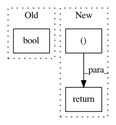

4f806cf7805b570f98334ac7e1bace2a8c94a9a6,networkml/featurizers/funcs/host.py,Host,_get_nonpriv_ports,#Host#Any#Any#Any#,211
Before Change
def _get_nonpriv_ports(self, rows, ip_proto, suffix):
nonpriv = int(bool(rows and self._nonpriv_ip_proto_ports(rows, ip_proto)))
return [{"tshark_nonpriv_%s_ports_%s" % (ip_proto, suffix): nonpriv}]
After Change
def _get_nonpriv_ports(self, rows, ip_proto, suffix):
nonpriv_ports = self._nonpriv_ip_proto_ports(rows, ip_proto)
return [{"tshark_%s_nonpriv_port_%s_%s" % (ip_proto, port, suffix): present
for port, present in nonpriv_ports.items()}]
def tshark_nonpriv_tcp_ports_in(self, rows):
rows = self._select_mac_direction(rows, output=False)
In pattern: SUPERPATTERN
Frequency: 4
Non-data size: 3
Instances
Project Name: CyberReboot/NetworkML
Commit Name: 4f806cf7805b570f98334ac7e1bace2a8c94a9a6
Time: 2020-02-28
Author: josh@vandervecken.com
File Name: networkml/featurizers/funcs/host.py
Class Name: Host
Method Name: _get_nonpriv_ports
Project Name: deepfakes/faceswap
Commit Name: b533782cbcc1b928a6c3962606e914878b7fabba
Time: 2018-10-23
Author: 36920800+torzdf@users.noreply.github.com
File Name: tools/lib_alignments/jobs.py
Class Name: RemoveAlignments
Method Name: faces_count_matches
Project Name: rusty1s/pytorch_geometric
Commit Name: 52ced49c2e7b0ef6d554988a41edcfd9df90c6f4
Time: 2020-07-01
Author: matthias.fey@tu-dortmund.de
File Name: torch_geometric/data/data.py
Class Name: Data
Method Name: __cat_dim__
Project Name: ysig/GraKeL
Commit Name: 2b8a7f6cdf259893a99f6923a42388c5495fb18d
Time: 2017-11-16
Author: y.siglidis@gmail.com
File Name: grakel/graph.py
Class Name: graph
Method Name: build_shortest_path_matrix